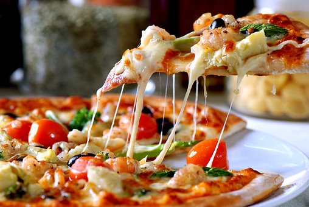

ABOUT US
ANY WAY YOU SLICE IT... WE'RE CHANGING THE GAME. Calling all pizza lovers - the bold, the daring, the artists who dream of crafting the perfect pizza we’re serving up something special just for you! Always fresh. Always blast-fired. Whether you want to put a new spin on an old classic or embrace our endless flavor combinations, you can customize your pizza and watch it come to life right before your eyes. Onf of the most popular and recognizable foods in the world, pizza is both delicious and affordable. Traditionally, pizza pies were oven-baked, oval shaped and tooped with just tomatoes and cheese. But modern variations use ingedients like egg, potatoes and coconut. No matter what pizza is your favourite, the facts will surely spike your interest in the classic cuisine. We’re ready to change the way you experience pizza... so get creative, explore the possibilities and rediscover pizza with a unique experience that is fast, flavorful and personalized - just for you!

We firmly believe that great food is an essential part of life and our dedicated team strives to make each meal a memorable experience. We assure you that our pizzas are extraordinarily scrumptious and we have over 15 different varieties so you can choose the perfect one according to your unique taste. We also have a wide range of starters which includes cheesy garlic bread, every child’s favourite fresh fries,crispy and tangy super loaded nachos and more. Enjoy a perfect slice of Italian heaven with us in your own city and we promise that you’ll experience such a celebration of flavours in your mouth that you’ll keep coming for more. And rest assured as we use only the very best ingredients in all our dishes so the food is healthy, tasty and always fresh. We look forward to serving you soon!